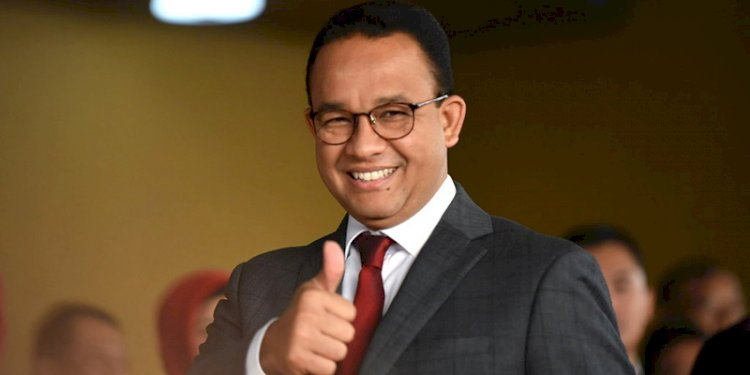

Calon Persiden Pemilu 2023.
Anies Baswedan adalah seorang politikus Indonesia yang lahir pada 7 Mei 1969 di Kuningan, Jawa Barat. Ia memiliki latar belakang pendidikan yang kuat, dengan gelar sarjana dalam bidang Ekonomi dan gelar magister serta doktor dalam bidang Kebijakan Publik. Anies memulai kariernya sebagai dosen dan peneliti sebelum memasuki dunia politik. Puncak kariernya adalah ketika ia terpilih sebagai Gubernur DKI Jakarta dalam pemilihan umum 2017. Selama masa jabatannya, ia berfokus pada pembangunan dan reformasi di Jakarta. Anies Baswedan dikenal karena visinya dalam mendorong perkembangan kota Jakarta, walaupun ia juga menghadapi kontroversi selama masa jabatannya.
Untuk membangun visi suatu negara dan bangsa yang begitu besar dan begitu luas seperti Indonesia, kami, Anies Rasyid Baswedan dan Abdul Muhaimin Iskandar, melakukan perjalanan panjang tanpa lelah dari Aceh hingga Papua. Kami bertemu, bertatap muka, mendengar, dan berbicara dengan rakyat Indonesia dari berbagai usia, latar belakang budaya, pendidikan, profesi, status sosial ekonomi, dan agama. Kami juga berdiskusi dengan ribuan tokoh masyarakat, pemikir dan akademisi, pemuka agama dan aktivis. Perjalanan panjang tersebut memberi bukti bahwa kehidupan rakyat saat ini masih dipenuhi berbagai masalah. Dan untuk menghadirkan kesejahteraan bagi semua, yang dibutuhkan adalah perubahan. erubahan tidak hanya suatu keinginan, tetapi juga suatu keniscayaan. Apa yang kami dengar dan kami tangkap dari rakyat semakin menguatkan tekad kami untuk melakukan perubahan yang lebih baik bagi negeri. Dengan perubahan sebagai dasar gagasan, kami mengusung visi yang merupakan impian jutaan rakyat Indonesia, yakni:“Indonesia Adil Makmur untuk Semua” Indonesia yang makmur menjadikan kemiskinan dan ketimpangan sebagai masa lalu. Kemakmuran ditandai oleh layanan publik yang terjangkau dan berkualitas bagi setiap warga negara, mulai dari kesehatan, pendidikan, perumahan, pangan, transportasi, energi, dan informasi. Indonesia yang makmur dan ditopang oleh industri kompetitif yang menghasilkan produk kelas dunia. Indonesia yang makmur disegani bangsa-bangsa dunia karena kekuatan ekonomi, teknologi, dan militer. Kemakmuran Bangsa Indonesia harus dibarengi dengan pelestarian alam dan lingkungan. Karena alam Indonesia adalah warisan generasi masa lalu sekaligus pinjaman generasi masa depan yang harus kita rawat sebaik-baiknya. Dalam Indonesia yang makmur, setiap warganya hidup dalam lingkungan yang bersih, bebas polusi, dan terlindungi dari bencana ekologis. Indonesia senantiasa menjaga hutan, air, sungai, gunung, laut, dan keragaman hayati agar dapat dinikmati oleh generasi kini dan masa depan, dan berkontribusi kepada kesehatan Bumi. Indonesia yang makmur adalah negara yang berkeadilan, di mana setiap warga negara memiliki akses ke layanan publik tanpa kecuali. Indonesia di mana kesempatan untuk hidup layak dan bahagia dapat dicapai oleh setiap anak bangsa apapun agamanya, jenis kelaminnya, sukunya, bahasanya, usianya, dan keadaan tubuhnya. Indonesia di mana setiap individu memiliki kebebasan berpendapat dan memiliki kesempatan setara untuk menjadi apa saja yang terbaik bagi mereka. Indonesia di mana setiap anak bangsa mendapat hak dan perlakuan yang sama di depan hukum tanpa terkecuali. Indonesia di mana hak-hak asasi setiap warganya dilindungi oleh Negara sebagai tanggung jawab konstitusional Inilah visi kami yang akan kami wujudkan jika diberi amanah untuk menjadi Presiden dan Wakil Presiden Republik Indonesia periode 2024-2029.
Jalan 1 Menuju Perubahan
Jalan 2 Menuju Perubahan
Jalan 3 Menuju Perubahan
Jalan 4 Menuju Perubahan
Jalan 5 Menuju Perubahan
Jalan 6 Menuju Perubahan
Jalan 7 Menuju Perubahan
Jalan 8 Menuju Perubahan
Elmawati Jaya. Gorontalo.
Saya melihat langsung, Pak Anies melakukan perubahan untuk Jakarta. Saya berharap Pak Anies membawa perubahan untuk seluruh daerah yang ada di Indonesia. Saya belajar dari Pak Anies bahwa kita sebagai pemimpin, tidak hanya seorang pemimpi. Kita sebagai pemimpi harus jadi seorang pemimpin. Dimulai dari langkah kecil kita.
Dandi Wahyu. Sumatera Selatan.
Beliau adalah figur karismatik, futuristik dan merangkul semua kalangan, terutama anak-anak muda. Kepeduliannya tidak usah diragukan lagi terhadap anak-anak muda. Kami sangat optimis dalam kemampuan diplomasinya secara global, Pak Anies tidak ada tandingannya. Bayangkan dalam 2 menit sudah mampu meyakinkan majelis internasional PBB. Kami sangat yakin Pak Anies akan menjadi pemimpin Indonesia di masa depan.
Sisi Matahari. Bandung.
Pak Anies Baswedan adalah orang yang hangat dan ramah. Bukan sesuatu yang jauh untuk digapai (pemikirannya mudah dipahami).